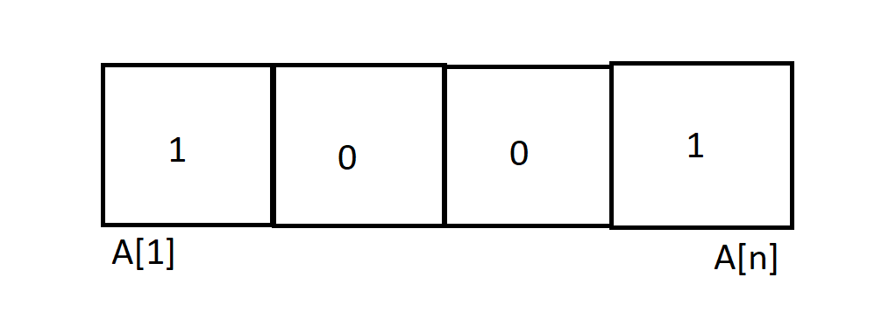
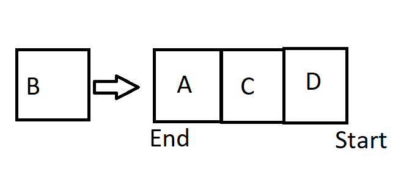
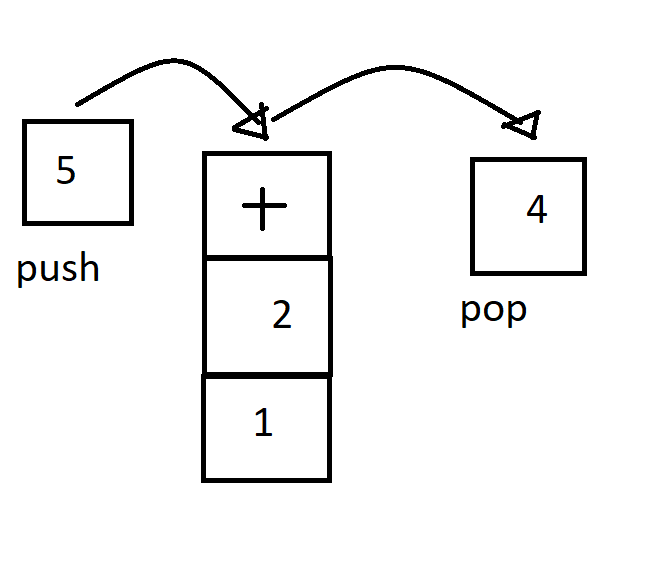
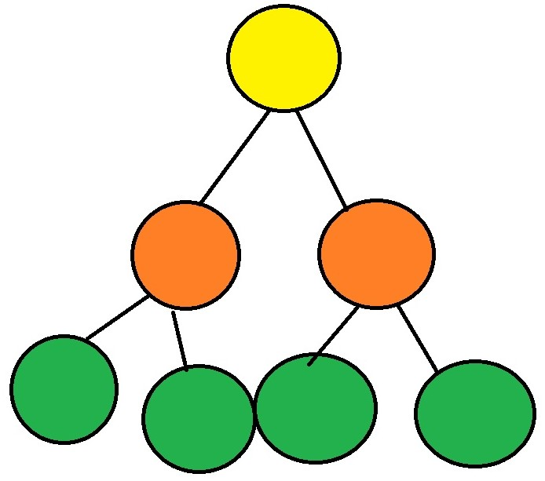

“Ein Array speichert mehrere Elemente des gleichen Basistypens. Ein Zugriff auf die einzelnen Elemente wird über einen Index möglich.”
“Eine verknüpfte Liste ist eine dynamische Datenstruktur, in der jedes Element einen Wert und eine Referenz/Zeiger auf das nächste Element in der Liste speichert.”
“Eine Warteschlange ist eine dynamische Datenstruktur, die eine beliebige Menge von Elementen speichern kann, jedoch können die gespeicherten Elemente nur in der gleichen Reihenfolge wieder gelesen werden, wie sie gespeichert wurden.”
“Ein Stack ist eine dynamische Datenstruktur, die eine beliebige Menge von Elementen speichern kann, die nur oben auf den Stapel gelegt werden können und auch nur von dort wieder runter genommen werden können.”
“Ein Graph ist eine Datenstruktur, die eine Menge von Objekten (Knoten) zusammen mit den zwischen diesen Objekten bestehenden Verbindungen (Kanten) repräsentiert.”
“Ein Baum ist in eine spezieller Art von Graph, der zusammenhängend ist und keine Zyklen enthält. Die Datenstruktur Baum ist eine verallgemeinerte Listenstruktur.”
Elementare Sortier-Verfahren (Average Case Laufzeit: O(n^2)
Höhere Sortier-Verfahren (Average Case Laufzeit: O(n log(n)
Es gibt verschiedene Suchmethoden (Sequenzielle Suche, Binärsuche, Interpolative Suche, Quadratische Suche)
Hashfunktion bildet Schlüssel k auf einen der m verschiedenen Indizes der Hashtabelle T ab.
Es gibt die Divisions- und Multiplikationsmethode zum Errechnen des Hashwertes.